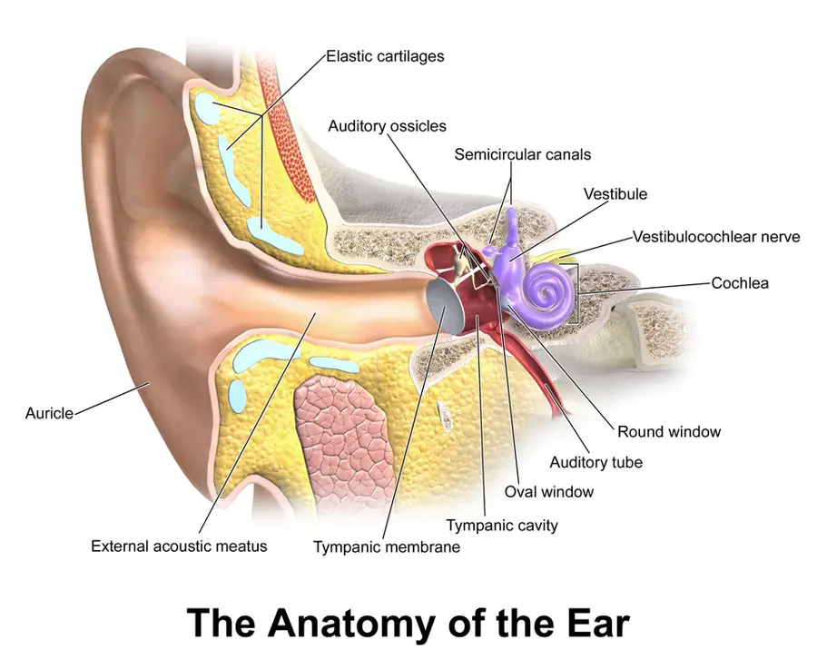

LOT_024 — S1.8 Écoulement auriculaire — Phase A : monographie du SSP et dix diagnostics différentiels
Une oreille qui coule saigne ou suppure soit par la peau du conduit, soit par la caisse à travers un tympan ouvert, soit par une brèche de la base du crâneS7S4S5. Le médecin écarte d’abord la fuite de liquide cérébrospinal, l’otite externe nécrosante et le cholestéatome, qui menacent la vie, l’os ou l’auditionS14S7S4. Il regarde ensuite le tympan, car son état décide du diagnostic et de la sécurité des gouttesS7AIPS (information professionnelle suisse) 31957.
1. Définition
L’écoulement auriculaire, ou otorrhée, désigne toute sécrétion qui sort du conduit auditif externe, qu’elle naisse de sa peau ou de l’oreille moyenne à travers le tympanS7S4. L’écoulement sanglant prend le nom d’otorragie, et l’écoulement de liquide cérébrospinal par l’oreille celui d’otoliquorrhéeS5S14.
2. Épidémiologie (Suisse, puis Europe)
Les Hôpitaux universitaires de Genève (HUG) décrivent l’otite externe comme la cause la plus fréquente de consultation ORL (oto-rhino-laryngologique) dans le monde, à tous les âgesS2. Sa fréquence baisse toutefois après 60 ans, alors que la revue d’Innsbruck situe le pic masculin vers 70 ansS2S9. Elle touche environ 10 % de la population au cours de la vie, et son incidence annuelle approche 1 % aux Pays-Bas et au Royaume-UniS9S7. L’otite moyenne aiguë perforée vient ensuite, surtout chez l’enfant, car la Société suisse d’infectiologie (SSI) la décrit comme rare chez l’adulteS3. L’otite moyenne chronique suppurée est devenue presque inexistante dans une série finlandaise, ce qui rend son rang indicatifS15.
Les indicateurs de fréquence fondent l’ordre gelé des dix monographies ; la gravité ajoute trois rangs d’exclusion, E1 à E3. Ces indicateurs restent hétérogènes, si bien que les limites des données interdisent un classement suisse exact.
Fréquence et gravité : pourquoi cet ordre
| Rang | Diagnostic | Donnée de fréquence | Source |
|---|---|---|---|
| DX.1 | Otite externe aiguë bactérienne | Environ 10 % de la population au cours de la vie ; plus de 90 % des otites externes sont bactériennes. | S9S7 |
| DX.2 | Otite moyenne aiguë perforée | L’otite moyenne aiguë purulente suit une infection des voies respiratoires supérieures ; la perforation se traduit par l’otorrhée. | S3 |
| DX.3 | Otite moyenne chronique suppurée sans cholestéatome | Les HUG décrivent des écoulements récurrents pendant les rhumes et après les baignades. | S4 |
| DX.4 | Otomycose | Les champignons causent environ 10 % des otites externes aiguës. | S7 |
| DX.5 | Dermatite eczémateuse du conduit auditif | L’atteinte du conduit par une dermatose est fréquente dans l’otite externe chronique. | S7 |
| DX.6 | Corps étranger du conduit auditif | Le conduit auditif externe compte parmi les sièges les plus fréquents de corps étranger. | S8 |
| DX.7 | Perforation tympanique traumatique | Plongée, sport, explosion ou gifle en sont les causes ; deux tiers se referment seules. | S6 |
| DX.8 🚩 E3 | Cholestéatome de l’oreille moyenne | Environ 8,6 admissions chirurgicales pour 100 000 habitants par an dans une série australienne. | S16 |
| DX.9 🚩 E2 | Otite externe nécrosante | 1 405 cas hospitaliers en Angleterre en 2017, contre 123 en 2002. | S10 |
| DX.10 🚩 E1 | Fuite otologique de liquide cérébrospinal | Phénomène rare selon la série néerlandaise ; une fracture de la base du crâne peut la provoquer. | S13S5 |
Le rang de fréquence fixe l’ordre de lecture, tandis que le rang E fixe l’ordre d’exclusion au lit du maladeS14S7S4. La fuite de liquide cérébrospinal passe donc en premier dans l’arbre décisionnel, alors qu’elle ferme la liste des fréquences.
Limites des chiffres
- L’otite externe touche surtout l’adulte, rarement l’enfant, alors âgé en général de 7 à 12 ansS7.
- Elle est plus fréquente dans les zones tropicales, car la chaleur et l’humidité favorisent l’infectionS7.
- Les femmes présentent une otite externe surtout vers 50 ans et les hommes vers 70 ans, selon la revue d’InnsbruckS9.
- L’incidence de l’otite externe est multipliée par cinq chez le nageur, ce qui explique son nom d’oreille du nageurS7.
- L’otite externe nécrosante a été multipliée par 11 en Angleterre entre 2002 et 2017, de 123 à 1 405 cas, et la hausse s’est poursuivie jusqu’en 2024S10S11.
- Son incidence a baissé de 30 % pendant la pandémie de COVID-19, avant de reprendre sa hausseS11.
- Le chiffre de cholestéatome provient d’Australie, faute de série suisse ; une série finlandaise montre une chute des chirurgies depuis les années 1970S16S15.
- Aucune série suisse ne classe les dix diagnostics, si bien que les rangs 4 à 7 restent indicatifsS7S9.
3. Physiopathologie
Le siège de l’écoulement explique sa nature, et la base anatomo-fonctionnelle montre ces sièges sur une coupe réelle en couleursS17. Le conduit mesure 2 à 3,5 cm de long et 5 à 9 mm de diamètre ; sa partie latérale est cartilagineuse et sa partie médiale osseuseS7. Le tympan ferme le conduit, si bien qu’un pus venu de la caisse n’apparaît dehors qu’à travers une perforationS4S3.
Base à connaître : conduit, tympan, caisse
Coupe frontale de l’oreille : d’où vient l’écoulement. Illustration en couleurs de Blausen Medical, licence CC BY 3.0S17.

Lisez d'abord seul ce cliché (coupe frontale de l’oreille : d’où vient l’écoulement) : cherchez vous-même le signe.
La copie annotée (coupe frontale de l’oreille : d’où vient l’écoulement) numérote les repères décrits ci-dessous.
- 1. Le repère 1 montre la partie cartilagineuse du conduit, qui porte poils, glandes et cérumen.S17S7
- 2. Le repère 2 montre la partie osseuse du conduit, dont la peau adhère au périoste.S17S7
- 3. Le repère 3 montre le tympan, qui sépare le conduit de la caisse.S17
- 4. Le repère 4 montre la caisse du tympan et ses osselets.S17
- 5. Le repère 5 montre la trompe auditive, qui relie la caisse au pharynx.S17
- 6. Le repère 6 montre la cochlée, dans l’oreille interne.S17
Ce que l'image décide. Un écoulement vient soit de la peau du conduit (repères 1 et 2), soit de la caisse à travers un tympan ouvert (repères 3 et 4)S17. Le premier geste consiste donc à voir le tympan.

La peau de la partie cartilagineuse porte des follicules pileux et des glandes sébacées et cérumineuses, dont les sécrétions forment le cérumenS7. La peau de la partie osseuse adhère directement au périoste, sans tissu sous-cutanéS7.
Le pH normal du conduit se situe entre 5 et 5,7 ; ce milieu acide et le cérumen hydrophobe freinent la croissance bactérienneS7. La migration des cellules épithéliales débarrasse normalement le conduit du cérumen, des débris et des micro-organismesS7.
Pourquoi le tragus fait mal : l’otite externe irrite le périoste situé sous la peau mince du conduit osseuxS7. La pression sur le tragus mobilise ce périoste enflammé et réveille donc la douleurS7. Pourquoi l’infection gagne la base du crâne : le plancher du conduit cartilagineux porte les fissures de SantoriniS7. Ces fissures conduisent l’infection vers la parotide, la fosse infratemporale et la base du crâneS7.
Trois mécanismes produisent l’écoulement, que le tableau des sièges relie aux diagnostics. L’humidité et les microtraumatismes, par exemple le coton-tige, ouvrent la barrière cutanée du conduit aux bactériesS2S7. Un tympan perforé permet au pus de la caisse de sortir, et une brèche osseuse permet au liquide cérébrospinal de fuirS4S5.
Le conduit reçoit une innervation sensitive multiple, tandis que l’intensité de la douleur vient du périoste tendu sous une peau sans tissu sous-cutanéS7.
Innervation sensitive du conduit
- Le nerf auriculotemporal, la branche auriculaire du nerf vague, le nerf grand auriculaire et le nerf auriculaire postérieur innervent le conduitS7.
- La peau du conduit osseux ne possède pas de tissu sous-cutané, si bien que l’œdème tend directement le périoste très sensibleS7.
- L’hyperkératose, les granulations, l’œdème ou la fibrose rétrécissent le conduit et entretiennent l’infectionS7.
Trois sièges, trois mécanismes
| Siège | Mécanisme | Diagnostics |
|---|---|---|
| Peau du conduit | Infection bactérienne ou fongique, eczéma, corps étranger qui irrite la peauS7S8. | DX.1, DX.4, DX.5, DX.6 |
| Caisse à travers le tympan | Pus d’une otite moyenne aiguë ou chronique, débris de peau d’un cholestéatomeS3S4. | DX.2, DX.3, DX.7, DX.8 |
| Os temporal et base du crâne | Ostéomyélite de la base du crâne ou brèche osseuse avec fuite de liquide cérébrospinalS7S5. | DX.9, DX.10 |
Deux sièges peuvent coexister : une perforation laisse couler du pus qui irrite et infecte ensuite la peau du conduitS7.
4. Démarche diagnostique
Le médecin exclut d’abord les trois urgences 🚩 E1 à E3, puis les drapeaux rouges sans rangS14S7. Une méningite ou une ostéomyélite de la base du crâne peuvent en effet tuerS14S7. Il regarde ensuite le tympan : intact, il oriente vers le conduit ; perforé, il oriente vers la caisseS7S4. Il précise enfin l’aspect et le terrain : pus après une otalgie aiguë, écoulement chronique, prurit, objet introduit ou liquide clair après un traumatismeS3S4S7S8S5.
Urgences à exclure d’abord : E1 à E3, puis drapeaux rouges
| Rang | Constat | Conduite |
|---|---|---|
| 🚩 E1 — Fuite de liquide cérébrospinal | Écoulement clair après un traumatisme crânien, avec surdité, vertige ou paralysie faciale. | Hospitaliser ; imagerie, dosage de la protéine bêta-trace et avis ORL, car la méningite menace la vieS5S13S14. |
| 🚩 E2 — Otite externe nécrosante | Diabétique ou immunodéprimé âgé, otalgie intense, granulations au plancher du conduit. | Avis ORL urgent, imagerie et antibiothérapie contre PseudomonasS7S12. |
| 🚩 E3 — Cholestéatome | Écoulement chronique purulent, baisse de l’audition, parfois vertiges. | Avis ORL, car la masse détruit la chaîne ossiculaire et impose une chirurgieS4. |
| Pile bouton | Pile bouton connue ou suspectée dans le conduit. | Retrait immédiat, sans irrigationS8. |
| Enfant en mauvais état général | Altération de l’état général chez un jeune enfant atteint d’otite moyenne. | Rechercher une infection systémiqueS3. |
Le raisonnement pas à pas montre l’erreur classique du débutant : traiter par des gouttes une otite externe qui ne guérit pas, sans penser à la forme nécrosanteS7.
Raisonnement pas à pas : l’otite externe qui ne guérit pas
- Situation : l’otite externe nécrosante touche surtout l’homme âgé diabétique ou immunodépriméS7S9.
- Étape 1, terrain : le médecin relève un diabète mal équilibré, qui impose déjà un antibiotique par voie orale dans l’otite externeS7S2.
- Étape 2, durée : la réponse au traitement se contrôle à 48 à 72 heures ; l’absence de réponse impose de revoir le diagnosticS7.
- Étape 3, signes : une otite externe persistante, des granulations ou de l’os à nu dans le conduit doivent faire suspecter la forme nécrosanteS7.
- Étape 4, examens : le médecin prélève l’écoulement, car Pseudomonas aeruginosa est isolé dans environ 90 % des cas, puis il demande une imagerieS7.
- Étape 5, décision : l’antibiothérapie dure au moins 4 à 6 semaines, par voie parentérale ou orale selon l’antibiogrammeS7.
- Erreur du débutant : le débutant renouvelle les gouttes, alors que l’ostéomyélite du rocher est associée à une mortalité de 10 à 21 %S7.
5. Anamnèse ciblée et drapeaux rouges
L’anamnèse commence par l’ordre des symptômes : une douleur qui précède l’écoulement oriente vers une otite moyenne aiguë qui perforeS3. Les symptômes caractérisés un à un distinguent ensuite le conduit, la caisse et la base du crâneS7S4S5. Les questions ciblées recherchent enfin le terrain, l’eau, l’objet introduit et le traumatismeS7S8S6.
Chaque symptôme : typique ou non, et pourquoi
| Symptôme | Typique de | Pourquoi | Piège |
|---|---|---|---|
| Douleur forte, aggravée par la pression du tragus | Otite externe aiguë (DX.1). | L’inflammation irrite le périoste du conduit osseuxS7. | Une douleur disproportionnée chez un diabétique évoque la forme nécrosanteS7. |
| Otalgie aiguë puis écoulement purulent | Otite moyenne aiguë perforée (DX.2). | Le pus de la caisse franchit le tympan perforéS3. | L’otoscopie montre d’abord un tympan rouge et bombéS3. |
| Écoulements récurrents avec les rhumes et les baignades | Otite moyenne chronique (DX.3). | La perforation laisse entrer l’eau et sortir le pusS4. | Une baisse d’audition accompagne souvent le tableauS4. |
| Prurit, débris, échec des gouttes antibiotiques | Otomycose (DX.4). | Les antibiotiques prolongés favorisent les champignonsS7. | Aspergillus en cause dans 60 à 90 % des casS7. |
| Prurit chronique, peau sèche ou suintante | Dermatite eczémateuse (DX.5). | La dermatose atteint la peau du conduit, souvent des deux côtésS7. | La néomycine provoque une dermatite de contact chez 15 à 30 % des patientsS7. |
| Écoulement unilatéral, odeur, enfant | Corps étranger (DX.6). | L’objet irrite la peau et s’infecteS8. | L’insertion n’est souvent pas rapportée par l’enfantS8. |
| Douleur ou saignement après gifle, plongée ou explosion | Perforation traumatique (DX.7). | La pression déchire le tympanS6. | Les causes sont la plongée, le sport, l’explosion ou la gifleS6. |
| Écoulement chronique purulent, baisse d’audition, vertiges | Cholestéatome (DX.8). | Les débris de peau envahissent la caisse et la mastoïdeS4. | La masse abîme progressivement la chaîne ossiculaireS4. |
| Otalgie intense, écoulement fétide, diabète | Otite externe nécrosante (DX.9). | L’infection atteint l’os de la base du crâneS7. | L’otalgie, présente dans 84 à 100 % des cas, reste peu spécifiqueS7. |
| Liquide clair après un traumatisme crânien | Fuite de liquide cérébrospinal (DX.10). | Une fracture ouvre la base du crâneS5. | Un liquide clair ne prouve rien sans dosage spécialiséS13. |
Questions ciblées et drapeaux rouges
- Le médecin recherche une baignade récente ou un nettoyage au coton-tige, que les HUG relient à l’otite externeS2.
- Il recherche un diabète ou une immunodépression, qui imposent un antibiotique oral et font craindre la forme nécrosanteS2S7.
- Il recherche un rhume récent et une otalgie avant l’écoulement, car l’otite moyenne aiguë suit une infection des voies respiratoiresS3.
- Il recherche une gifle, une plongée, un sport ou une explosion, causes de perforation traumatiqueS6.
- Il recherche un choc crânien, car une fracture de la base du crâne peut faire couler du sang ou du liquide cérébrospinalS5.
- Il recherche, chez l’enfant, un objet introduit ou une pile manquante, car la pile bouton impose un retrait immédiatS8.
- Il relève les gouttes déjà employées, car la néomycine sensibilise la peau et reste ototoxiqueS7.
- Les drapeaux rouges sont le liquide clair après un traumatisme, la paralysie faciale, le vertige, la surdité brutale, l’otalgie disproportionnée chez un diabétique et la pile boutonS5S7S8.
6. Examen physique ciblé, région par région
Le médecin apprécie d’abord l’état général, puis il examine le pavillon et le tragus. Il inspecte ensuite le conduit, cherche à voir le tympan et teste l’audition. Il termine par les nerfs crâniens et les ganglions et la peau voisine, qui révèlent une extensionS7S5.
Région 1 — État général
Région 3 — Conduit auditif
- Le médecin tire doucement le pavillon vers l’arrière et le haut, puis il éclaire le conduitS8.
- Il recherche un œdème, une rougeur ou une pâleur et une obstruction, qui caractérisent l’otite externe aiguëS7.
- Il cherche des granulations ou de l’os à nu au plancher du conduit, signes de la forme nécrosanteS7.
- Il cherche un corps étranger, sans tenter plusieurs extractions, car le succès baisse après le premier échecS8.
- Le guide de la société britannique d’oto-rhino-laryngologie répartit les gestes : le soignant de proximité éclaire le conduit, le médecin utilise l’otoscope, l’ORL l’otomicroscope ou l’otoendoscopeS8.
- Un corps étranger peut perforer le tympan ou luxer la chaîne ossiculaire, ce qui justifie la prudence du gesteS8.
- Il noie d’abord un insecte vivant dans de l’huile végétale ou minérale, ce qui arrête le bourdonnement et la douleurS8.
Région 4 — Tympan
- Le médecin cherche à voir le tympan, car l’otoscopie fait partie du diagnostic minimal de l’otite externeS7.
- Un tympan rouge et bombé signe l’otite moyenne aiguë purulenteS3.
- Une perforation avec écoulement récidivant oriente vers l’otite moyenne chronique, et des débris de peau vers le cholestéatomeS4.
- Un tympan non visible n’est jamais réputé intact, car les gouttes ototoxiques sont contre-indiquées en cas de perforationS7AIPS (information professionnelle suisse) 31957.
Région 6 — Nerfs crâniens
- Le médecin teste la motricité faciale, car une fracture de la base du crâne peut entraîner une paralysie facialeS5.
- Il recherche d’autres atteintes des nerfs crâniens, car l’otite nécrosante qui gagne la base du crâne peut les léserS7.
- L’âge supérieur à 70 ans, le diabète, la paralysie faciale et un scanner anormal élèvent la mortalité de la forme nécrosante quand deux d’entre eux s’associentS7.
7. Approche syndromique
Le médecin range l’écoulement dans cinq syndromes, qui commandent chacun une conduite différenteS7S4. Il tient compte de la coexistence possible de deux syndromes, par exemple une perforation qui infecte secondairement le conduitS7. Il sépare enfin l’épisode aigu de la maladie chronique, car le second exige toujours un bilan ORLS4.
L’âge oriente aussi le tri : l’otite externe aiguë touche surtout l’adulte, tandis que le corps étranger du conduit se découvre souvent par hasard chez l’enfantS7S8. Le terrain diabétique ou immunodéprimé déplace enfin la vigilance vers la forme nécrosante, dès que la douleur paraît disproportionnée ou persisteS7.
Cinq syndromes, cinq conduites
| Syndrome | Indices | Conduite |
|---|---|---|
| Infection aiguë du conduit | Douleur au tragus, conduit enflé, baignade. | Nettoyage, gouttes, contrôle à 48 à 72 heuresS7. |
| Pus de la caisse | Otalgie aiguë puis écoulement, tympan perforé. | Antibiotique immédiat selon la SSIS3. |
| Écoulement chronique | Écoulements récurrents, surdité, perforation ancienne. | Avis ORL ; exclure un cholestéatomeS4. |
| Prurit et desquamation | Débris fongiques ou peau eczémateuse. | Prélèvement, antifongique ou traitement de la dermatoseS7. |
| Brèche ou extension osseuse | Liquide clair après un traumatisme ; granulations chez un diabétique. | Hospitalisation, imagerie et avis spécialiséS5S7. |
8. Diagnostic positif et critères
Le diagnostic repose sur l’anamnèse et l’examen, au minimum l’otoscopie du conduit et du tympan, que résume le tableau des dix diagnosticsS7. Le médecin sépare l’écoulement de sa cause : une otite externe qui ne guérit pas impose de revoir le diagnostic et le germeS7. Les diagnostics hors liste restent à rechercher, car leur absence des monographies ne les exclut pasS7.
Les dix diagnostics retenus
| DX | Orientation | Ce qui confirme | Vigilance |
|---|---|---|---|
| DX.1 — Otite externe aiguë bactérienne | Douleur au tragus, conduit enflé. | Otoscopie du conduit et du tympanS7. | Diabète : antibiotique oralS2. |
| DX.2 — Otite moyenne aiguë perforée | Otalgie aiguë puis otorrhée. | Otoscopie : perforation, tympan inflamméS3. | Antibiotique immédiatS3. |
| DX.3 — Otite moyenne chronique suppurée sans cholestéatome | Écoulements récurrents, intolérance à l’eau. | Otoscopie et bilan ORLS4. | Exclure le cholestéatomeS4. |
| DX.4 — Otomycose | Prurit, débris, échec des antibiotiques. | Aspect et prélèvementS7. | Tympan perforé : Wiegand propose un antifongique systémique, l’ORL choisit, toute crème azolée reste hors AIPSS7. |
| DX.5 — Dermatite eczémateuse du conduit auditif | Prurit chronique, souvent bilatéral. | Aspect séborrhéique ou eczémateuxS7. | Allergie aux gouttes possibleS7. |
| DX.6 — Corps étranger du conduit auditif | Écoulement unilatéral, odeur. | OtoscopieS8. | Pile bouton : retrait immédiatS8. |
| DX.7 — Perforation tympanique traumatique | Douleur soudaine, baisse auditive, acouphènes, parfois vertiges, après un traumatisme. | OtoscopieS6. | Deux tiers cicatrisent seulesS6. |
| DX.8 🚩 E3 — Cholestéatome de l’oreille moyenne | Pus chronique, surdité, vertiges. | Otoscopie et bilan ORLS4. | Chirurgie nécessaireS4. |
| DX.9 🚩 E2 — Otite externe nécrosante | Diabétique âgé, granulations. | Scanner et imagerie fonctionnelleS7. | Avis ORL urgentS7. |
| DX.10 🚩 E1 — Fuite otologique de liquide cérébrospinal | Liquide clair après traumatisme ou chirurgie. | Protéine bêta-trace ou bêta-2-transferrineS13. | Risque de méningiteS14. |
L’otite moyenne aiguë obéit à des critères de la SSI, et l’otite externe chronique à deux formes cliniques qu’il faut reconnaîtreS3S7.
Otite moyenne aiguë : critères de la SSI
- La SSI définit l’otite moyenne aiguë purulente comme la surinfection bactérienne de l’oreille moyenne après une infection des voies respiratoires supérieuresS3.
- L’otalgie récente en constitue le signe d’appel ; chez le petit enfant, le geste de toucher l’oreille en tient lieuS3.
- L’otoscopie montre un tympan rouge et bombé, car l’épanchement inflammatoire pousse le tympan vers le conduitS3.
- La fièvre peut accompagner les symptômes d’infection respiratoire, sans être nécessaire au diagnosticS3.
- L’otite séromuqueuse s’en distingue par un épanchement sans signe d’inflammation aiguë, donc sans tympan rougeS3.
- Les examens sanguins et microbiologiques ne servent habituellement pas, sauf chez le nouveau-néS3.
Otite externe chronique : deux formes
- La forme chronique atteint les deux oreilles chez plus de la moitié des patientsS7.
- Le prurit et la surdité de transmission par obstruction dominent, tandis que la douleur reste rareS7.
- La forme séborrhéique se reconnaît à l’absence de cérumen et à une peau sèche, squameuse, rouge ou luisanteS7.
- La forme eczémateuse se reconnaît à une peau humide et érythémateuseS7.
- Un pH alcalin du conduit, induit par l’inflammation, favorise aussi la chronicitéS7.
Diagnostics hors liste
- La revue allemande mentionne la périchondrite, l’érysipèle et le zona auriculaire parmi les diagnostics différentiels de l’otite externeS7.
- Elle cite aussi l’otite externe bulleuse hémorragique et le carcinome du conduit auditif, qui peuvent couler ou saignerS7.
- L’otite externe circonscrite correspond à un furoncle du conduit cartilagineux, le plus souvent dû à Staphylococcus aureusS7.
9. Examens complémentaires
L’otite externe simple se diagnostique sans examen, mais l’analyse microbiologique s’impose en cas d’échec ou de forme chroniqueS7. Un nettoyage sous microscope précède souvent l’examen du tympan, car l’exsudat le masqueS7. L’imagerie, complétée pour la forme nécrosante par la fenêtre d’extension, répond à une question précise : extension osseuse, cholestéatome ou fracture de la base du crâneS7S4S5. Le dosage d’une protéine du liquide cérébrospinal confirme une fuite, et l’audiométrie mesure le retentissementS13S7.
Nettoyage sous microscope
- Indication : un conduit encombré d’exsudat empêche de voir le tympan et d’appliquer les gouttesS7.
- Technique : un ORL expérimenté nettoie le conduit sous microscope, par aspiration ou au crochet, sans blesser la peauS7.
- Rinçage : le conduit ne se rince à l’eau distillée ou au sérum physiologique qu’après avoir exclu une perforation du tympanS7.
- Cabinet : en l’absence d’ORL, le généraliste ou le pédiatre peut faire ce nettoyageS7.
Prélèvement microbiologique
- Indication : l’absence de réponse au traitement impose d’identifier le germe si possibleS7.
- Germes attendus : Pseudomonas aeruginosa et Staphylococcus aureus dominent l’otite externe bactérienneS7.
- Champignons : Aspergillus et Candida dominent l’otomycose, plus fréquente dans les formes chroniquesS7.
- Forme nécrosante : le prélèvement guide une antibiothérapie qui suit l’antibiogramme pendant plusieurs semainesS12S7.
Imagerie
- Otite nécrosante : l’examen de référence associe le scanner haute résolution à une imagerie fonctionnelleS7.
- Imagerie fonctionnelle : elle repose sur la tomographie par émission de positons au fluorodésoxyglucose couplée à l’IRM (imagerie par résonance magnétique), quand elle est disponibleS7.
- Pourquoi : l’imagerie fonctionnelle montre l’ostéite avant que le scanner ne voie l’érosion osseuseS7.
- Fracture de la base du crâne : les HUG demandent selon le cas une IRM, un scanner ou une radiographieS5.
- Fuite de liquide cérébrospinal : le scanner localise la brèche ; la scintigraphie du liquide peut compléterS14.
Otite nécrosante : extension et imagerie
- Les protéases libérées par Pseudomonas détruisent les tissus et entraînent une vasculariteS7.
- L’infection suit les fissures de Santorini vers la parotide, les tissus périauriculaires et l’articulation temporo-mandibulaireS7.
- Dans 80 % des cas, l’ostéomyélite du rocher détruit l’os en direction de l’articulation temporo-mandibulaire et du clivusS7.
- Les granulations du plancher du conduit manquent chez une partie des patients, puisque leur fréquence varie de 42,1 à 100 % selon les sériesS7.
- Chez l’enfant, chez qui la forme nécrosante reste très rare, l’IRM devient l’examen de choixS7.
- Une biopsie s’impose toujours pour exclure un carcinome ou un cholestéatome du conduit, qui peuvent imiter la forme nécrosanteS7.
Protéine bêta-trace et bêta-2-transferrine
- Indication : le médecin demande ce dosage devant un liquide clair après un traumatisme ou une chirurgie de l’oreilleS13S5.
- Interprétation : la protéine bêta-trace détecte de façon sensible, rapide et non invasive le liquide cérébrospinal dans l’épanchementS13.
- Piège : l’aspect clair ne suffit pas, car seul le dosage prouve la présence de liquide cérébrospinalS13.
10. Arbre décisionnel
- Avant tout — Si une pile bouton est en cause, le médecin la fait retirer immédiatement, sans irrigation, car le délai se compte en minutesS8.
- 🚩 E1 — Si un liquide clair coule après un traumatisme crânien, le médecin hospitalise, demande l’imagerie et le dosage de la protéine bêta-traceS5S13.
- 🚩 E2 — Si un diabétique âgé garde une otite externe avec granulations, le médecin suspecte la forme nécrosante et demande un avis ORL urgentS7.
- 🚩 E3 — Si un écoulement chronique s’accompagne de surdité ou de vertiges, le médecin recherche un cholestéatome avec l’ORLS4.
- Si le tragus est douloureux et le conduit enflé, le médecin traite une otite externe aiguë et contrôle à 48 à 72 heuresS7.
- Si l’écoulement suit une otalgie aiguë avec perforation, le médecin prescrit un antibiotique immédiat selon la SSIS3.
- Si des écoulements récurrents accompagnent une perforation ancienne, le médecin adresse à l’ORL pour une tympanoplastieS4.
- Si le prurit domine avec des débris, le médecin prélève et traite une otomycose ou une dermatoseS7.
- Si un objet est visible, le médecin soigne la première tentative, décisive, et adresse à l’ORL après des échecs répétésS8.
- Si un traumatisme a perforé le tympan, le médecin surveille la cicatrisation, puis adresse si elle n’a pas lieuS6.
11. Prise en charge selon les recommandations suisses
11.A — Urgences. Les urgences suivent une conduite chronologique : la pile bouton se compte en minutes, la fuite de liquide cérébrospinal en heures et la forme nécrosante en heures à joursS8S14S7.
11.B — Traitement de la cause. L’otite externe relève d’un traitement local, et l’otite moyenne aiguë perforée d’un antibiotique immédiat selon la SSIS2S3. Les gouttes auriculaires se choisissent d’après l’état du tympan, car certaines sont contre-indiquées en cas de perforationAIPS 31957AIPS 54807. Les autres causes ont leur propre conduite : antiseptiques et antibiotiques locaux, otomycose et dermatite, corps étranger, forme nécrosante et chirurgie de l’oreille moyenneS7S8S4. Les erreurs fréquentes de prescription expliquent une grande partie des échecsS7.
11.C — Surveillance et critères de sortie. Le médecin contrôle l’otite externe à 48 à 72 heures et revoit le diagnostic si elle ne répond pasS7. Le patient atteint d’otite externe simple rentre avec un contrôle fixé à 48 à 72 heures et des consignes de reconsultation en cas d’aggravationS7S3. Il suit la forme nécrosante par des contrôles cliniques et radiologiques jusqu’à la disparition de l’infection, et il prévoit les complications propres à chaque diagnosticS7.
11.D — Situations spéciales. La grossesse, l’allaitement, le jeune enfant, le diabète et le drain transtympanique modifient les choix, que la fenêtre des situations spéciales détailleAIPS 54807AIPS 31957AIPS 44911S7.
Situations spéciales
- Grossesse, Ciproxin HC (ciprofloxacine et hydrocortisone) : l’AIPS écrit : « Ciproxin HC Suspension auriculaire en gouttes ne doit pas être utilisé pendant la grossesse, ou uniquement en cas d'absolue nécessité »AIPS 54807.
- Allaitement, Ciproxin HC : l’AIPS écrit : « Ciproxin HC Suspension auriculaire en gouttes ne doit pas être utilisé pendant l'allaitement, ou uniquement en cas d'absolue nécessité »AIPS 54807.
- Panotile : l’AIPS écrit : « La prudence est de mise en cas d’emploi pendant la grossesse », et la même phrase couvre l’allaitementAIPS 31957.
- Grossesse, amoxicilline : l’AIPS d’Amoxi-Mepha écrit : « La prudence est donc de rigueur lors de l'emploi d'Amoxi-Mepha au cours de la grossesse »AIPS 44911.
- Allaitement, amoxicilline : l’AIPS écrit : « La substance ne doit donc pas être administrée pendant la période d'allaitement ou, si nécessaire, il faut procéder au sevrage de l'enfant »AIPS 44911.
- Enfant : Ciproxin HC s’emploie dès deux ans ; la SSI donne un antibiotique immédiat à l’enfant de moins de deux ans atteint d’otite bilatéraleAIPS 54807S3.
- Diabète ou immunodépression : le traitement local de l’otite externe s’accompagne d’un antibiotique oralS2S7.
- Drain transtympanique : les anesthésiques locaux sont contre-indiqués, comme en cas de perforationS7.
Antiseptiques et antibiotiques locaux
- Les antiseptiques locaux, comme l’acide acétique, agissent sur un large spectre ; l’acidification freine les bactéries, qui préfèrent un milieu neutreS7.
- L’acide acétique égale les gouttes antibiotiques ou corticoïdes après 7 jours, mais il devient nettement moins efficace si le traitement dure 2 à 3 semainesS7.
- Les gouttes antibiotiques doivent couvrir Pseudomonas aeruginosa et Staphylococcus aureus, et s’adapter si possible à l’antibiogrammeS7.
- Les quinolones sont efficaces et non irritantes, mais une exposition prolongée favorise les résistances ; elles ne doivent donc pas durer plus que nécessaireS7.
- Une analyse Cochrane ne montre aucune différence d’efficacité clinique entre préparations avec et sans quinoloneS7.
- Les corticoïdes locaux réduisent l’œdème, l’érythème et les sécrétions quand ils s’ajoutent à l’antibiotiqueS7.
- Les anesthésiques locaux sont contre-indiqués si le tympan est perforé ou porte un drain transtympaniqueS7.
- Ils peuvent aussi masquer une aggravation, ce qui impose un contrôle à 48 heuresS7.
Otomycose et dermatite du conduit
- L’otomycose se traite par des mèches imprégnées d’un antifongique local, comme le ciclopirox, la nystatine, le clotrimazole ou le miconazoleS7.
- Ces antifongiques n’ont pas d’AIPS suisse lue pour l’usage auriculaire, si bien que leur emploi dans l’oreille reste hors AIPSS7.
- Si le tympan est perforé, l’antifongique devient systémique, par exemple le fluconazole ou l’itraconazole, selon la sensibilité du champignon ; leur posologie se lit dans leur AIPSS7.
- L’antibiothérapie prolongée, l’immunodépression et le diabète favorisent l’otomycose, ce qui explique son apparition après des gouttes antibiotiquesS7.
- L’otite externe chronique vise à rendre à la peau du conduit son état normal et à relancer la production de cérumenS7.
- Un prélèvement exclut d’abord une infection bactérienne ou fongique, puis un traitement local anti-inflammatoire supprime l’inflammation chroniqueS7.
- Les corticoïdes oraux peuvent agir dans les formes résistantes aux autres traitementsS7.
Corps étranger : retrait selon l’objet
- Un objet mou, comme du coton, se retire à la pince fine sous un éclairage frontalS8.
- Une perle ou un objet rond se retire avec un crochet mousse coudé, car la pince le repousse souvent plus loinS8.
- L’irrigation convient aux petits objets inorganiques et aux insectes, mais elle est contre-indiquée si le tympan peut être perforé ou si une pile est en causeS8.
- Les graines, cacahuètes ou grains de riz gonflent au contact de l’eau ; ils se retirent avant de gonfler, sans irrigationS8.
- Les objets inertes non hygroscopiques ne sont pas urgents, mais un séjour prolongé rend le retrait plus difficile et douloureuxS8.
- Le médecin adresse à l’ORL si l’objet reste invisible, touche le tympan, résiste à plusieurs tentatives ou s’enclave dans la partie médiale du conduitS8.
- Les corps étrangers multiples sont fréquents chez l’enfant ; le médecin inspecte donc les autres orifices de la tête après le retraitS8.
Otite externe nécrosante : traitement
- L’antibiothérapie empirique cible Pseudomonas aeruginosa en attendant l’antibiogramme, selon la gravitéS7.
- Des mèches antiseptiques ou antimicrobiennes peuvent compléter le traitement général dans le conduitS7.
- Si l’évolution traîne, le chirurgien retire les tissus nécrosés et les séquestres osseux, qui empêchent les antibiotiques d’atteindre l’infectionS7.
- Une résection étendue de la base latérale du crâne ne permet pas d’améliorer le pronosticS7.
- Le suivi clinique et radiologique se répète ; certaines équipes refont une imagerie toutes les 2 à 6 semaines jusqu’à la disparition de l’infectionS7.
- L’étude anglaise conclut que la résistance aux antibiotiques ne contribue pas de façon significative à la hausse des casS11.
Chirurgie de l’oreille moyenne
- Les HUG traitent l’otite moyenne chronique simple par une tympanoplastie, qui place sous la perforation une greffe prise chez le patientS4.
- Si l’audition est atteinte, le chirurgien peut reconstruire la chaîne ossiculaire dans le même tempsS4.
- Le cholestéatome simple s’opère par voie transcanalaire ou endoscopique ; la voie rétro-auriculaire exige une anesthésie générale et trois jours d’hospitalisationS4.
- Une fracture qui traverse l’oreille interne peut rendre l’oreille totalement sourde ; un implant cochléaire reste possible si le nerf auditif est intactS5.
Otite externe aiguë : traitement local
- Les HUG nettoient le conduit et placent une mèche imprégnée de pommade antibiotique, qui guérit généralement l’inflammation en quelques joursS2.
- Le nettoyage atraumatique retire cérumen et exsudat, car l’exsudat contient des toxines qui entretiennent l’inflammationS7.
- Les gouttes antiseptiques, antibiotiques ou corticoïdes améliorent 65 à 90 % des patients en 7 à 10 jours, quel que soit l’agent choisiS7.
- Le patient s’allonge sur le côté sain, instille les gouttes et reste couché 3 à 5 minutes, car la bonne application décide du résultatS7.
- Un antibiotique oral se justifie seulement en cas d’extension, de diabète mal équilibré, d’immunodépression ou de traitement local impossibleS7S2.
- Le paracétamol ou l’ibuprofène soulagent la douleur, qui domine le tableauS7.
- L’otite externe circonscrite, furoncle du conduit cartilagineux, se traite si elle est légère par des gouttes, pommades ou mèches antibiotiques et des antalgiquesS7.
Erreurs fréquentes de prescription
- 20 à 40 % des patients traités pour une otite externe aiguë reçoivent un antibiotique général en première intention, ce qu’il faut éviterS7.
- Cette pratique expose aux effets indésirables et aux résistances, alors que le traitement local suffit dans la forme non compliquéeS7.
- Les antibiotiques locaux augmentent de 46 % la guérison clinique et de 61 % la guérison bactériologique par rapport au placeboS7.
- Une prescription renouvelée sans revoir le diagnostic fait manquer l’otomycose, la dermatite de contact ou la forme nécrosanteS7.
Otite moyenne aiguë perforée : antibiotique immédiat
- La SSI recommande un antibiotique immédiat dans l’otite moyenne aiguë perforée, car le bénéfice y est démontréS3.
- L’amoxicilline reste le traitement de première intention ; l’association amoxicilline-acide clavulanique sert notamment en l’absence de réponse après 72 heuresS3.
- Chez l’adulte, la SSI prescrit 1 g d’amoxicilline toutes les 8 heures pendant 5 jours, dans la fourchette de l’AIPS d’Amoxi-Mepha, 1500 à 3000 mg par jourS3AIPS 44911.
- Chez l’enfant, la SSI propose 25 mg/kg toutes les 12 heures pendant 10 jours en cas de perforation, hors AIPS par le rythme des prisesS3AIPS 44911.
- L’AIPS répartit au contraire 50 à 100 mg/kg par jour en 3 à 4 prises ; cette divergence se tranche avec le pédiatreAIPS 44911.
- L’AIPS contre-indique l’amoxicilline en cas d’hypersensibilité aux pénicillines ou aux céphalosporines ; la mononucléose et la leucémie lymphoïde exposent à un exanthème dans plus de 90 % des casAIPS 44911.
- En cas d’allergie, la SSI propose le céfuroxime si les céphalosporines restent possibles, sinon la clarithromycine chez l’enfant et le cotrimoxazole chez l’adulte, avec une dose à vérifier dans leur AIPSS3.
- La SSI recommande une antalgie par paracétamol ou ibuprofène chez tous les patientsS3.
- Elle ne recommande ni décongestionnant ni antihistaminique, faute de bénéficeS3.
- Une nouvelle consultation s’impose si les symptômes s’aggravent ou ne s’améliorent pasS3.
Gouttes auriculaires et tympan
- L’AIPS de Panotile interdit son emploi lors d’une perforation du tympan, après une intervention chirurgicale ou sur une lésion préexistante du conduitAIPS 31957.
- Elle motive cette interdiction par l’ototoxicité, qui expose à une surditéAIPS 31957.
- Panotile contient de la néomycine, de la polymyxine B, de la fludrocortisone et de la lidocaïne ; l’hypersensibilité à un composant le contre-indique aussiAIPS 31957.
- L’AIPS de Ciproxin HC le contre-indique en cas de perforation du tympan connue ou supposée, d’infections virales du conduit, d’infections fongiques ou d’hypersensibilité aux quinolones ou aux composantsAIPS 54807.
- Ciproxin HC n’est pas indiqué pour traiter une otite moyenne, ce qui exclut son emploi dans l’otite moyenne aiguë perforéeAIPS 54807.
- Un tympan non visualisé exclut donc toute préparation dont l’AIPS contre-indique la perforation connue ou supposée ; l’ORL choisit alors d’après l’AIPSAIPS 54807AIPS 31957.
- L’AIPS de Ciproxin HC prescrit, dès deux ans, trois gouttes dans l’oreille atteinte deux fois par jour pendant sept jours, après un test de sensibilitéAIPS 54807.
- L’AIPS de Panotile prescrit 4 à 5 gouttes 2 à 4 fois par jour chez l’adulte, et 2 à 3 gouttes 3 à 4 fois par jour chez l’enfantAIPS 31957.
- Quel que soit l’âge, la durée du traitement ne devrait pas dépasser 10 jours selon cette AIPSAIPS 31957.
Urgence — conduite chronologique
- Minutes : devant une pile bouton dans le conduit, le médecin organise un retrait immédiat, sans irrigationS8.
- Heures : devant un liquide clair après un traumatisme, il hospitalise et fait doser la protéine bêta-traceS5S13.
- Heures à jours : devant une forme nécrosante, il obtient un avis ORL, une imagerie et un prélèvement avant l’antibiothérapieS7S12.
- Semaines : l’antibiothérapie de la forme nécrosante dure au moins 4 à 6 semaines ; la série munichoise a employé la voie intraveineuseS7S12.
- Chirurgie : la série hongroise opère la fuite otogène de liquide cérébrospinal, à cause du risque de méningite mortelleS14.
À prévoir : complications et suivi par diagnostic
| Diagnostic | Ce qui menace | Ce que le médecin prévoit |
|---|---|---|
| DX.1 Otite externe aiguë bactérienne | L’échec du traitement cache parfois une forme nécrosante ou fongiqueS7. | Contrôle à 48 à 72 heuresS7. |
| DX.2 Otite moyenne aiguë perforée | Les complications comme la mastoïdite restent raresS3. | Nouvelle consultation en cas d’aggravationS3. |
| DX.3 Otite moyenne chronique suppurée sans cholestéatome | La perte auditive progresse avec les écoulements récurrentsS4. | Tympanoplastie par l’ORLS4. |
| DX.4 Otomycose | Sur tympan perforé, Wiegand propose un antifongique systémique ; l’ORL choisit, et toute crème azolée reste hors AIPS (DX.4)S7. | Prélèvement et contrôle de la guérisonS7. |
| DX.5 Dermatite eczémateuse du conduit auditif | La néomycine provoque une dermatite de contact qui entretient la maladieS7. | Recherche d’une allergie aux gouttesS7. |
| DX.6 Corps étranger du conduit auditif | Les échecs répétés de retrait multiplient les complicationsS8. | Avis ORL après échecS8. |
| DX.7 Perforation tympanique traumatique | Un tiers des perforations ne se ferment pas et évoluent vers l’otite chroniqueS6. | Tympanoplastie si la perforation persisteS6. |
| DX.8 Cholestéatome de l’oreille moyenne | La masse détruit la chaîne ossiculaireS4. | Chirurgie, parfois avec trois jours d’hospitalisationS4. |
| DX.9 Otite externe nécrosante | L’infection peut causer méningite, thrombose veineuse et abcès cérébralS7. | Suivi clinique et radiologique répétéS7. |
| DX.10 Fuite otologique de liquide cérébrospinal | Une méningite menace la vieS14. | Avis ORL ; la série hongroise opère la brècheS14. |
12. Prévention
La prévention primaire évite le coton-tige, car le microtraumatisme favorise l’invasion bactérienne du conduitS7S2. Par déduction, elle range les piles bouton hors de portée des enfants, car leur présence dans le conduit impose un retrait immédiatS8. Elle explique aussi au patient la bonne instillation des gouttes, qui décide du résultat du traitement localS7.
Le conduit doit rester sec : après une entrée d’eau, le patient le sèche au sèche-cheveuxS7. La prévention secondaire contrôle toute otite externe à 48 à 72 heures et adresse à l’ORL un écoulement chroniqueS7S4. La prévention tertiaire évite les facteurs de risque connus et protège l’oreille perforée de l’eau, intolérée en cas d’otite chroniqueS7S4.
Le suivi après l’épisode adapte les conseils à la cause, car l’oreille opérée, perforée ou eczémateuse ne se protège pas de la même façonS4S7.
Après l’épisode : conseils et suivi par cause
- Après une otite moyenne aiguë, la SSI ne prévoit pas de contrôle systématique, mais une nouvelle consultation si les symptômes s’aggravent ou persistentS3.
- L’oreille atteinte d’otite moyenne chronique tolère mal l’eau, si bien que les écoulements reviennent après les baignades jusqu’à la tympanoplastieS4.
- Une perforation traumatique qui ne se ferme pas évolue vers l’otite moyenne chronique, ce qui justifie un contrôle de la cicatrisationS6.
- Après une otite externe, le patient évite les facteurs de risque connus pour prévenir de nouveaux épisodesS7.
- Après une dermatite de contact due à la néomycine, le patient évite les préparations qui en contiennent, comme PanotileS7AIPS 31957.
- Après une forme nécrosante, le suivi clinique et radiologique dépiste une récidiveS7.
- Le patient qui nage beaucoup fait nettoyer son conduit par un médecin avant ses vacances si l’autonettoyage fonctionne malS7.
13. Points clés
- La fuite de liquide cérébrospinal, l’otite externe nécrosante et le cholestéatome s’excluent d’abord, malgré leur rang de fréquenceS14S7S4.
- La douleur provoquée par la pression du tragus signe l’otite externe aiguëS7.
- Un tympan non visible doit être considéré comme perforé avant de choisir des gouttesS7AIPS 54807.
- L’otite moyenne aiguë perforée justifie un antibiotique immédiat selon la SSIS3.
- Une otite externe qui ne répond pas en 48 à 72 heures impose de revoir le diagnosticS7.
- Un écoulement chronique avec surdité ou vertiges exige un avis ORL pour exclure un cholestéatomeS4.
- Un liquide clair après un traumatisme se confirme par la protéine bêta-trace, pas par son aspectS13.
14. Pièges et questions fréquentes à l’examen fédéral suisse
- Une otorrhée prouve-t-elle une otite externe ? Non, le pus peut venir de la caisse à travers un tympan perforé (point 3)S3S4.
- Peut-on prescrire Panotile si le tympan est perforé ? Non, son AIPS l’interdit à cause de l’ototoxicité (point 11)AIPS 31957.
- Faut-il différer l’antibiotique dans l’otite moyenne aiguë perforée ? Non, la SSI recommande un antibiotique immédiat (point 11)S3.
- Que craindre devant une otite externe rebelle chez un diabétique âgé ? Elle évoque une otite externe nécrosante. L’ostéomyélite du rocher est associée à une mortalité de 10 à 21 % (point 4)S7. DX.9 donne les autres chiffres de mortalité avec leurs sources.
- Peut-on irriguer une oreille qui contient une pile bouton ? Non, l’irrigation est contre-indiquée et le retrait immédiat (point 11)S8.
- Un liquide clair après un choc crânien se juge-t-il à l’œil ? Non, la protéine bêta-trace le confirme (point 9)S13.
- Une perforation traumatique impose-t-elle toujours une chirurgie ? Non, deux tiers se referment seules (point 11)S6.
- Faut-il un antibiotique général dans une otite externe simple ? Non, le traitement local suffit, sauf extension, diabète mal équilibré ou immunodépression (point 11)S7.
- Comment traiter un insecte vivant dans le conduit ? Le médecin le noie dans de l’huile végétale ou minérale avant le retrait (point 6)S8.
Sources
Toutes les sources ont été consultées le 12.11.2026.
- [S1] CIMS/SMIFK. PROFILES 2023 — Situations as Starting Points, SSP S1.8 « discharge from ear(s) ». https://www.smifk-cims.ch/profiles-2023/ssps
- [S2] Hôpitaux universitaires de Genève (HUG), service d’ORL et de chirurgie cervico-faciale. Otite externe. https://www.hug.ch/orl-chirurgie-cervico-faciale/otite-externe
- [S3] Société suisse d’infectiologie (SSI). Otite moyenne aiguë, version validée le 08.05.2024, valable jusqu’au 15.12.2026. https://ssi.guidelines.ch/guideline/2406/fr
- [S4] Hôpitaux universitaires de Genève (HUG), service d’ORL. Otite moyenne chronique avec et sans cholestéatome. https://www.hug.ch/orl-chirurgie-cervico-faciale/otite-moyenne-chronique-avec-sans-cholesteatome
- [S5] Hôpitaux universitaires de Genève (HUG), service d’ORL. Fracture de la base du crâne. https://www.hug.ch/orl-chirurgie-cervico-faciale/fracture-base-crane
- [S6] Hôpitaux universitaires de Genève (HUG), service d’ORL. Perforation tympanique traumatique. https://www.hug.ch/orl-chirurgie-cervico-faciale/perforation-tympanique-traumatique
- [S7] Wiegand S, Berner R, Schneider A, Lundershausen E, Dietz A. Otitis externa. Dtsch Arztebl Int 2019;116:224–234. https://pmc.ncbi.nlm.nih.gov/articles/PMC6522672/
- [S8] ENT UK, Global ENT guidelines. Foreign bodies in the external auditory canal. https://www.entuk.org/_userfiles/pages/files/guidelines/global%20ent%20guidelines/foreign_bodies_external_auditory_canal.pdf
- [S9] Neher A, Nagl M, Scholtz AW (Innsbruck). Otitis externa: Ätiologie, Diagnostik und Therapie. HNO 2008;56(10):1067–1079. https://doi.org/10.1007/s00106-008-1830-y
- [S10] Linton S, Stapleton E. Necrotising otitis externa: a national increase. J Laryngol Otol 2022;136(10):925–929. https://doi.org/10.1017/S0022215121004515
- [S11] Kong D, Linton S, Stapleton E. Necrotising otitis externa in England, 2002–2024. J Laryngol Otol 2025;139(10):1–7. https://doi.org/10.1017/S0022215125102910
- [S12] Stocker M, Hempel JM (LMU Munich). Malignant otitis externa: a single-centre series. Sci Rep 2025;15:26367. https://doi.org/10.1038/s41598-025-11742-z
- [S13] Kemps GJF, et al. (Pays-Bas). Beta-trace protein and beta-2 transferrin testing for cerebrospinal fluid in middle ear effusion. Heliyon 2024;10(6):e28059. https://doi.org/10.1016/j.heliyon.2024.e28059
- [S14] Bajor B, et al. (Budapest). Otogén liquorcsorgás. Orv Hetil 2026;167(9):331–336. https://doi.org/10.1556/650.2026.33498
- [S15] Alho OP, Jokinen K, Laitakari K, Palokangas J (Oulu). Chronic suppurative otitis media and cholesteatoma: vanishing diseases among Western populations? Clin Otolaryngol Allied Sci 1997;22(4):358–361. https://doi.org/10.1046/j.1365-2273.1997.00027.x
- [S16] Li J, et al. (Australie). Incidence of cholesteatoma surgery. Laryngoscope Investig Otolaryngol 2021;7(1):210–218. https://doi.org/10.1002/lio2.709
- [S17] Blausen Medical. Blausen 0328 Ear Anatomy, CC BY 3.0, Wikimedia Commons. https://commons.wikimedia.org/wiki/File:Blausen_0328_EarAnatomy.png
- [AIPS 31957] Swissmedic, information professionnelle : Panotile, gouttes auriculaires, Zambon Suisse SA, n° d’autorisation 31957, mise à jour mars 2021. https://files.refdata.ch/simis-public-prod/MedicinalDocuments/2982497d75d8429f94238a7ee10de662-fr.html
- [AIPS 54807] Swissmedic, information professionnelle : Ciproxin HC, suspension auriculaire, n° d’autorisation 54807, mise à jour mars 2024. https://files.refdata.ch/simis-public-prod/MedicinalDocuments/60c59a399aab401fadc6cd1179773b3f-fr.html
- [AIPS 44911] Swissmedic, information professionnelle : Amoxi-Mepha, Mepha Pharma AG, n° d’autorisation 44911, 49929, mise à jour septembre 2026. https://files.refdata.ch/simis-public-prod/MedicinalDocuments/174c174fbc1a4bcb8daa6f13b5231a20-fr.html